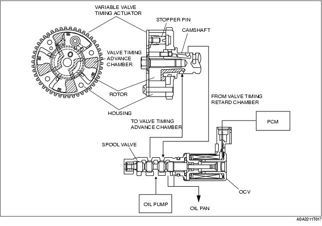
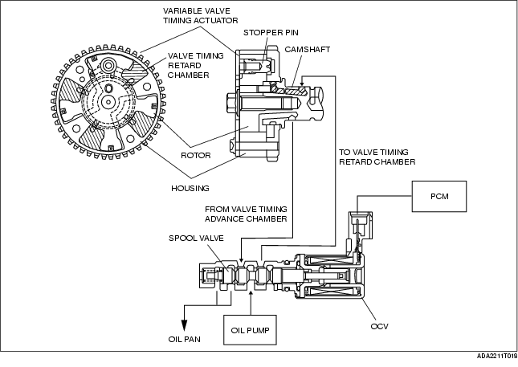

VARIABLE VALVE TIMING MECHANISM OPERATION [ZY]
id0110001208c0
Operation outline
• The variable valve timing actuator has two hydraulic chambers: a valve timing advance chamber and a valve timing retard chamber. They are located between the integrated housing of the camshaft sprocket and the camshaft integrated rotor. The oil pump supplies engine oil to each chamber. Hydraulic pressure applied to each chamber is controlled by the oil control valve (OCV), and the relative phases of the camshaft sprocket and the camshaft are modified to obtain optimum valve timing according to engine operation conditions.
At engine start
• When the stopper pin in the variable valve timing actuator engages with the rotor, which is at the position of maximum valve timing retard due to spring force, the camshaft sprocket and the camshaft rotate as one unit. When the oil pump pressure rises and the stopper pin is disengaged, it is possible to modify the relative angles of the camshaft sprocket and the camshaft.
Advancing valve timing
• When the spool valve in the oil control valve (OCV) moves to the left according to the PCM signal, hydraulic pressure from the oil pump feeds into the valve timing advance passage, and finally to the valve timing advance chamber in the variable valve timing actuator. Then, the rotor integrated with the camshaft rotates in the valve timing advance direction, against the housing driven by the crankshaft, and the valve timing is advanced.

Retarding valve timing
• When the spool valve in the oil control valve (OCV) moves to the right according to the PCM signal, hydraulic pressure from the oil pump feeds into the valve timing retard passage, and finally to the valve timing retard chamber in the variable valve timing actuator. Then, the rotor integrated with the camshaft rotates in the valve timing retard direction, against the housing driven by the crankshaft, and valve timing is retarded.

Maintaining intermediate valve timing
• The spool valve in the oil control valve (OCV) is located near the middle of the valve timing advance and retard positions. Because of this, hydraulic pressures are maintained in both valve timing advance and retard chambers of the variable valve timing actuator. At the same time, relative angles of the rotor and the housing are fixed and maintained, resulting in fixed valve timing.